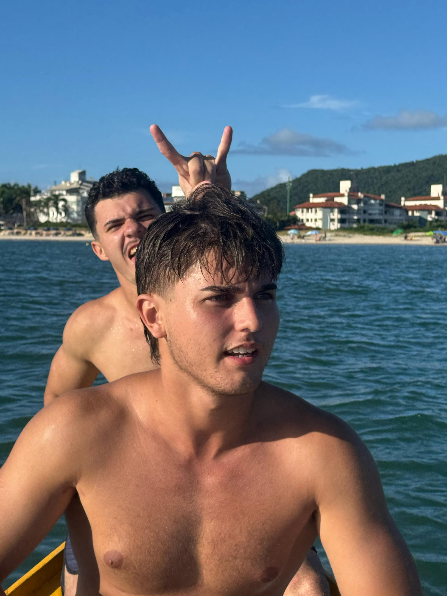

Olá! meu nome é Gabriel Arthur dos Santos, tenho 17 anos, sou nativo e residente do norte de Floripa. Creio que essa ilha é um verdadeiro pedaço do paraíso! sobre meus principais hobbies, gosto de passar o tempo ouvindo um bom som, treinando e as vezes lutando. Atualmente estou cursando o terceiro ano do ensino médio da Escola Sesi, turma 3B, turma essa que tem incluso o curso técnico de Desenvolvimento de Sistemas. Falando um pouco sobre o futuro, pretendo ingressar na área da marinha mercante, meu foco é passar na EFOMM, assim me formando 2º Oficial de náutica, e futuramente faria a prova para prático de navio, que é a minha profissão dos sonhos.
Explore meus trabalhos e projetos do Ensino Médio.
Humanas Linguagens Matemática Natureza PPE